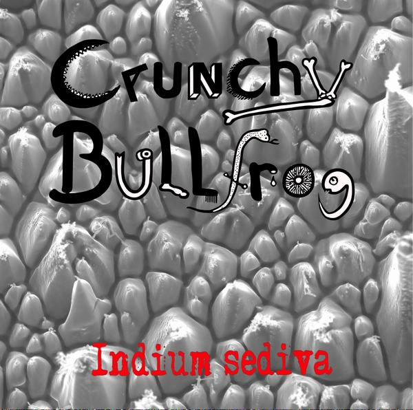
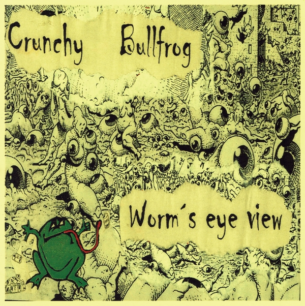
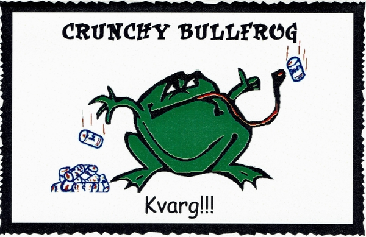

Songs
Indium Sediva|  |
1. Betty Page |
4. Mr. Brown |
|
2. London Bridge |
5. Fuck The Police |
|
|
3. Hey |
6. Why Does It Always Hurt The Wrong? |
Zum Download der einzelnen Songs: ->Rechtsklick auf den Player ->Audio speichern unter...
eigene CD erstellen!Worm's Eye View
|  |
1. Raver |
|
|
2. Why Does It Always Hurt The Wrong? |
||
|
3. Getting High |
KVARG!!!
|  |
1. Colour TV |
|
|
2. Fuck The Police |
||
|
3. Maria |